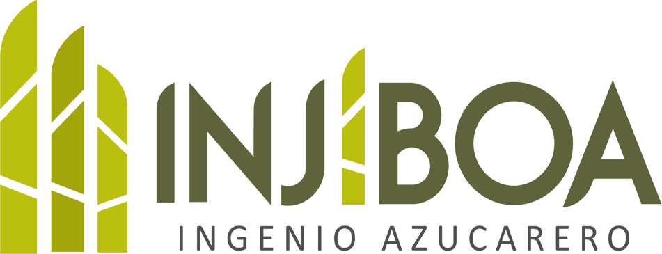

El comienzo
Construcción e inauguración del ingenio en San Vicente.

San Vicente, El Salvador
Producción de azúcar, melaza y energía renovable desde San Vicente, El Salvador. Conoce nuestra empresa, nuestros productos y cómo contactarnos.
Conoce nuestra empresaQuiénes somos
Somos una planta agroindustrial que transforma la caña de azúcar en productos que forman parte de la vida cotidiana.
Desde San Vicente, El Salvador, integramos la producción de azúcar y melaza con la generación de electricidad a partir del bagazo de caña. Una misma materia prima, distintas formas de aportar al desarrollo.
Así transformamos la cañaConstrucción e inauguración del ingenio en San Vicente.
Obtención de la certificación bajo normas de calidad ISO.
Producción de azúcar, melaza y generación de energía renovable.
Nuestros productos
Aprovechamos su riqueza para crear productos de valor y energía de origen renovable.
Azúcar cruda y azúcar sulfitada blanca, obtenidas de la transformación de la caña.
Un coproducto del proceso azucarero que amplía el aprovechamiento de nuestra materia prima.
Electricidad generada a partir del bagazo de caña, con aporte a la red nacional.
Energía que nace de la caña
Después de extraer el jugo de la caña, su fibra conserva un gran potencial. Este bagazo se utiliza como biomasa para generar electricidad.
Así, el proceso azucarero da paso a una nueva fuente de valor: energía renovable que contribuye al abastecimiento de El Salvador.
Explora el procesoNuestro proceso
Un recorrido de transformación que conecta la agricultura, la industria y la energía.
La caña llega al ingenio para iniciar su transformación.
Extraemos el jugo y separamos el bagazo de la caña.
El jugo se procesa para obtener azúcar y melaza.
El bagazo se aprovecha como biomasa para producir electricidad.
Calidad y sostenibilidad
La calidad y el aprovechamiento de los recursos orientan nuestra actividad agroindustrial.
La certificación ISO obtenida en 2003 forma parte de la historia del ingenio.
Azúcar, melaza y biomasa: distintas formas de aprovechar la caña.
El bagazo conecta nuestra producción con la generación de electricidad.
Ubicación y contacto
Estamos en San Vicente, en el corazón de una tierra de tradición agrícola.